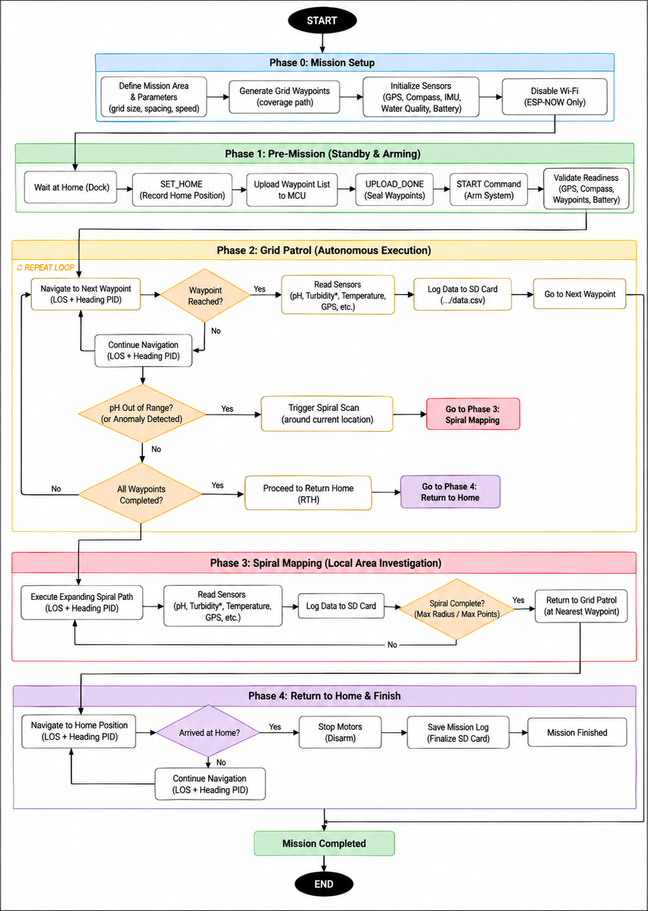

01 / Route planning
Waypoints turn a survey area into a patrol route
The dashboard can generate a sweep route from a selected area. The boat then follows ordered GPS points, logs readings along the mission and returns to its recorded home position.
Automatic sweep layout
Three lines with three points on each line
The backend divides the selected bounds evenly. For a horizontal survey, each sweep line uses its start, midpoint and end longitude; vertical mode swaps the axes.
Alternating point order
After each line, the planner reverses the point order. This makes the boat sweep back and forth instead of returning to the same side before every pass.
Simplified from main.py · /generate_sweep. This is the route-generation logic, not measured field coverage.
sweep_lines = [start, middle, end]
line_points = [start, middle, end]
direction = 1
for line in sweep_lines:
points = line_points if direction == 1 \
else reversed(line_points)
for point in points:
add_waypoint(line, point)
direction *= -1Mission workflow
Check, patrol, investigate and return
- Prepare: define the area, upload waypoints and check GPS, compass and battery.
- Patrol: navigate to each waypoint, read water sensors and save the position with the data.
- Investigate: if a configured threshold is exceeded, perform a local spiral scan and then resume near the closest waypoint.
- Return: navigate to home, stop the motors and finalize the mission log.
The report does not specify a field-tested waypoint spacing or a measured coverage percentage.

Navigation inputs
GPS locates the boat; the compass guides its heading
Position
NEO-8M GPS supplies coordinates for waypoint tracking and route history.
Heading
QMC5883L magnetometer reports compass heading for line-of-sight guidance.
Correction
The report describes PID heading control that adjusts the left and right thrusters.